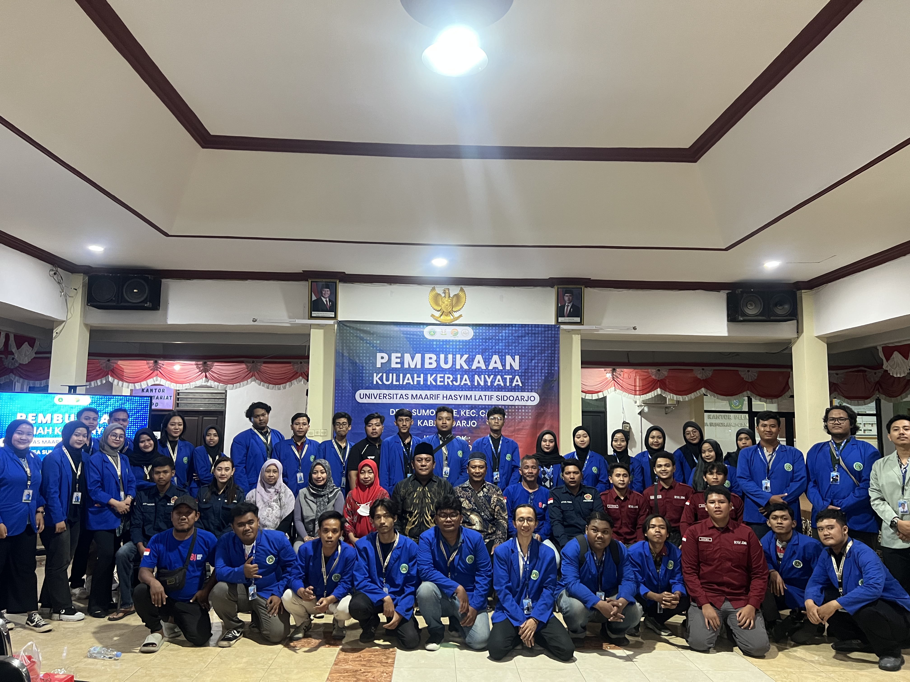

Asal Usul Desa
D esa Sumorame merupakan salah satu desa yang berada di Kecamatan Candi, Kabupaten Sidoarjo, Provinsi Jawa Timur. Berdasarkan penelusuran sejarah dan cerita yang berkembang di masyarakat, khususnya berdasarkan keterangan dari sesepuh desa seperti Mbah Atma Jaya dan Mbah Simojoyo, Desa Sumorame diperkirakan telah berdiri sejak tahun 1616 Masehi.
Menurut cerita yang diwariskan secara turun-temurun, nama Sumorame berasal dari gabungan nama dua dusun yang menjadi bagian dari wilayah desa, yaitu Dusun Sumotuwo dan Dusun Keramean . Kata “Sumo” diambil dari bagian nama Dusun Sumotuwo, sedangkan kata “Rame” berasal dari Dusun Keramean. Penggabungan kedua nama tersebut kemudian dikenal sebagai Sumorame.
Dusun Sumotuwo dipercaya memiliki keterkaitan dengan istilah “Sumo” yang dalam cerita masyarakat dikaitkan dengan keberadaan singa tua, sumur tua, atau asal-usul para sesepuh yang dahulu menjadi bagian dari sejarah wilayah tersebut. Sementara itu, nama Keramean dikaitkan dengan kata “rame”, yang menggambarkan keadaan wilayah yang ramai oleh aktivitas dan kehidupan masyarakat.
Kisah mengenai asal-usul tersebut merupakan bagian dari sejarah lisan yang diwariskan dari generasi ke generasi dan menjadi salah satu identitas budaya masyarakat Desa Sumorame. Dalam perkembangannya, Desa Sumorame secara administratif terbagi menjadi dua dusun utama, yaitu Dusun Sumotuwo dan Dusun Keramean . Kedua dusun tersebut menjadi bagian penting dalam perjalanan sejarah dan perkembangan Desa Sumorame hingga saat ini.
Desa Sumorame memiliki luas wilayah sekitar 113,98 hektare , yang terdiri atas kawasan permukiman, fasilitas umum, serta lahan pertanian. Sebagian masyarakat Desa Sumorame secara turun-temurun menggantungkan mata pencaharian pada sektor pertanian. Luas lahan pertanian yang terdapat di wilayah desa mencapai sekitar 33 hektare , dengan hasil panen rata-rata sekitar 210 ton per panen .
Secara geografis, Desa Sumorame memiliki batas wilayah sebagai berikut:
- Sebelah Utara: Desa Gelam dan Desa Sugihwaras
- Sebelah Selatan: Desa Boro, Kecamatan Tanggulangin
- Sebelah Barat: Desa Karangtanjung
- Sebelah Timur: Desa Ngampelsari
Seiring dengan perkembangan zaman, Desa Sumorame terus mengalami perubahan dan pembangunan dalam berbagai bidang. Meskipun demikian, nilai-nilai sejarah, cerita para sesepuh, serta asal-usul terbentuknya desa tetap menjadi bagian penting dari identitas masyarakat. Sejarah tersebut menjadi warisan yang perlu dijaga dan dikenalkan kepada generasi penerus agar keberadaan serta jati diri Desa Sumorame tetap lestari.
Dengan demikian, sejarah Desa Sumorame tidak hanya menggambarkan terbentuknya sebuah wilayah, tetapi juga mencerminkan perjalanan kehidupan masyarakat yang telah berkembang dari masa ke masa. Kisah yang diwariskan oleh para sesepuh menjadi bagian dari kekayaan sejarah lokal yang memperkuat identitas Desa Sumorame sebagai salah satu desa di Kecamatan Candi, Kabupaten Sidoarjo.
Desa Sumorame
Tahun Berdiri: 1616 M
Luas Wilayah: 113,98 Ha
ROCHMANU
Sambutan Kepala Desa Sumorame
Assalamu’alaikum warahmatullahi wabarakatuh, Salam sejahtera bagi kita semua. Dengan penuh rasa syukur, saya menyambut seluruh warga dan pengunjung di website resmi Desa Digital. Website ini diharapkan dapat menjadi sarana informasi, komunikasi, dan pelayanan bagi seluruh masyarakat Desa Sumorame.

STATISTIK DESA
DATA POPULASI PPID DESA SUMORAME, KECAMATAN CANDI, DESA SIDOARJO
Laki-Laki
0
Jiwa
Perempuan
0
JiwaTotal Penduduk
0
JiwaTotal RW
0
RW
Total Dusun
0
DusunBerita Terkini

Visi
"Terwujudnya Desa Sumorame yang Makmur dan Unggul melalui pembangunan yang berkelanjutan..."
Misi
- Memuat Misi...
Produk Unggulan
Memuat produk unggulan...